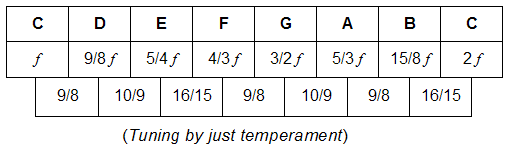

| The method of defining pitch values in terms of simple ratios is referred to as just temperament. |
| Using just temperament, however, means that not all intervals of the same type actually sound the same. |
| For instance, the notes C, D, and E are all separated by a whole step. |
| However, the chart below shows that the ratios representing these identical whole steps are, in fact different. |
| This inequality of intervallic relationships presents intonation problems when attempting to perform compositions that are based on scales generated from different starting notes. |
|  |
| The modern method for dividing the octave into 12 equal parts is to set the semitone equal to |
| This is referred to as equal temperament. |
| Because the distance between notes is logarithmically uniform, this method allows composers and musicians to use all scales with equal ease. |
Return to music theory.